计算机网络笔记（五）
5.1 传输层基本功能与UDP协议
传输层功能
传输层提供应用进程间的逻辑通信，且提供复用与分用功能
UDP协议
无连接、不可靠
提供的数据单位协议是UDP报文或用户数据报（不做数据的划分）
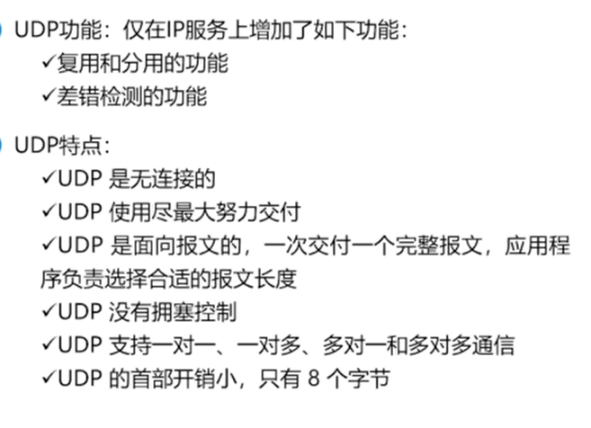
报文格式
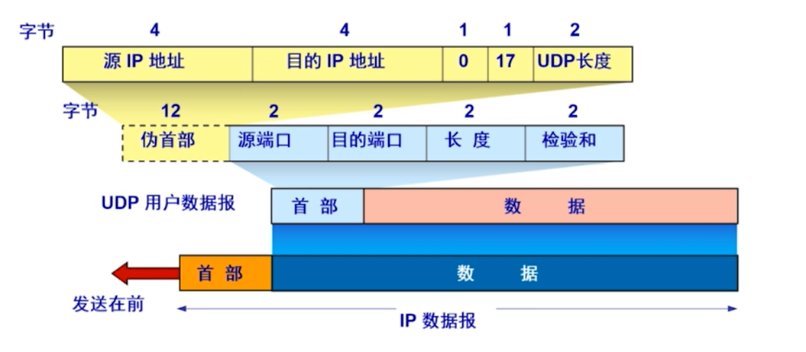
此处可以看出为什么上一章中ICMP报头需要包括IP数据报报头和数据前8个字节，因为前8个字节就是UDP数据报的报头，包含了进程（端口）
计算校验和：二进制反码求和
TCP协议
面向连接、可靠、开销更大
不提供广播、多播
提供的数据单位协议是TCP报文段
基于端口标识进程

熟知端口号
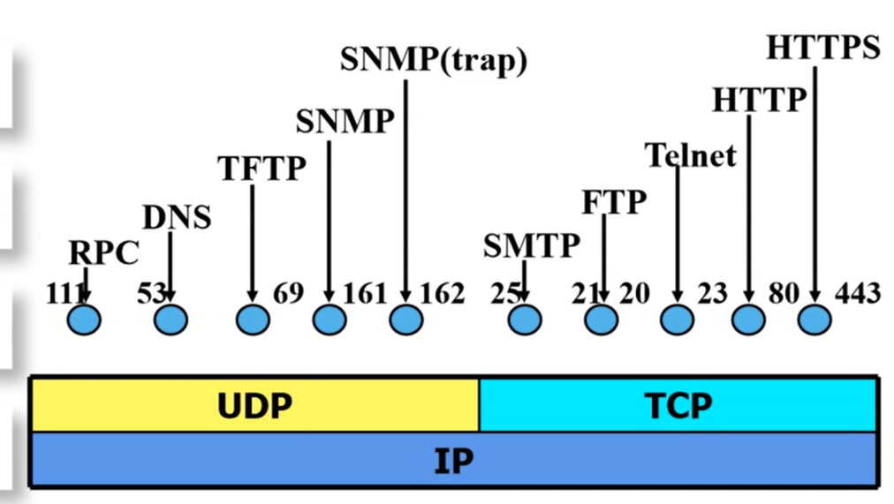
记住TCP+UDP
5.2 TCP协议
面向连接、可靠、字节流、点到点、单位为段
报文结构
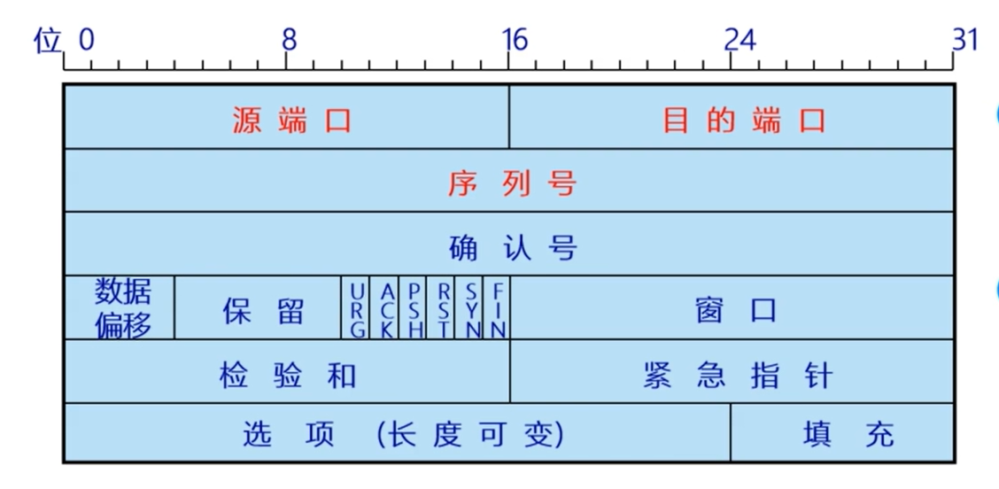
重要的字段
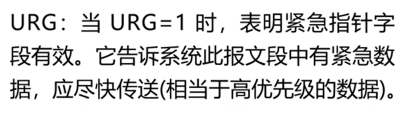
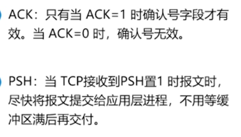
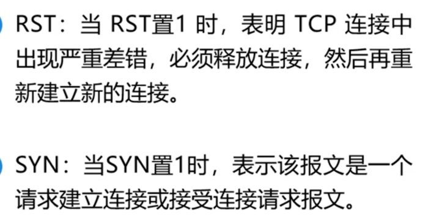
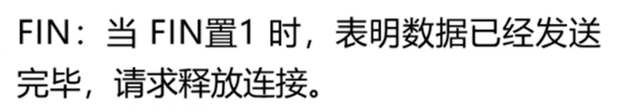
5.3 TCP协议连接管理
TCP连接
TCP连接的端点叫做套接字（socket)=（IP地址：端口号），每一条TCP连接被通信两端两个套接字所确定
三次握手
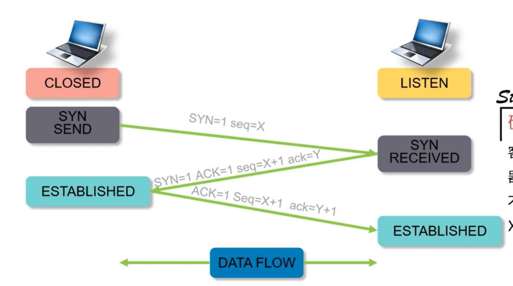
第三次握手确保发送的不是旧的请求
释放连接四次握手
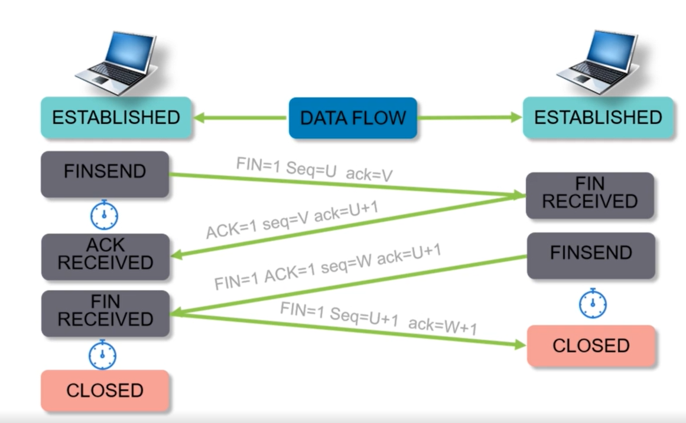
5.4 TCP协议可靠传输
可靠传输原理
超时重传机制
停等协议
分组错误、分组丢失、确认丢失、确认收到
简单但信道利用率低
流水线协议
滑动窗口协议
TCP滑动窗口
TCP重传定时器
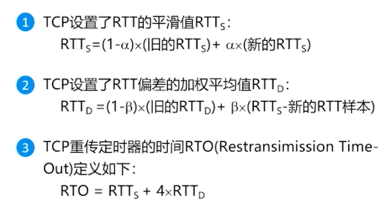
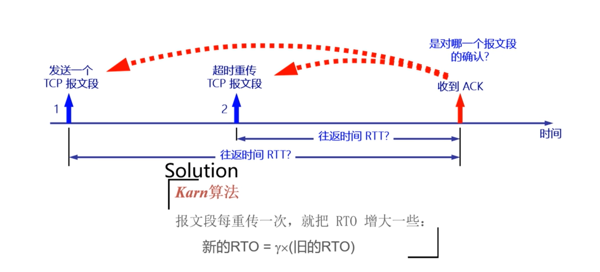
其他定时器
持续定时器、保活定时器、等待控制定时器
5.5 TCP协议拥塞控制
UDP没有拥塞控制能力
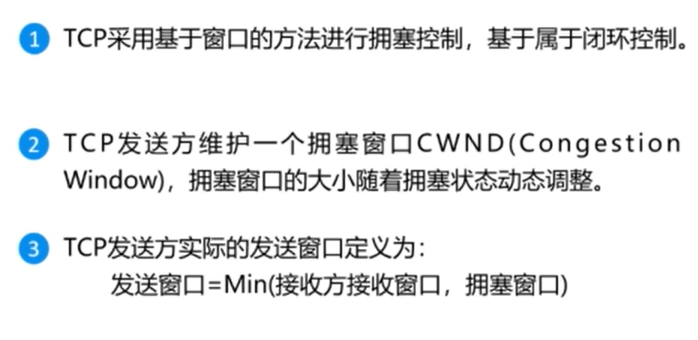
慢开始和拥塞避免
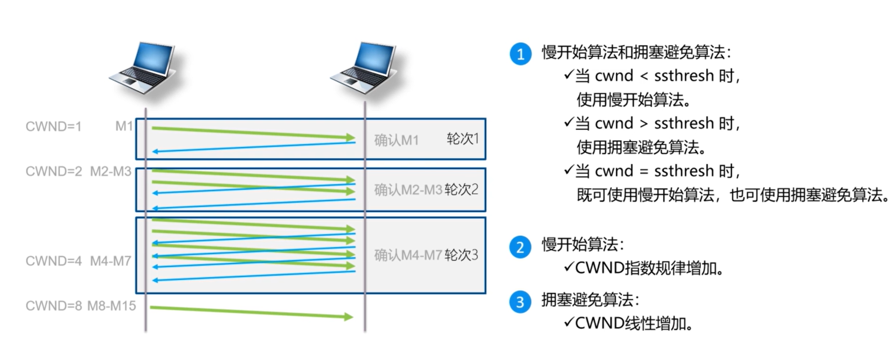
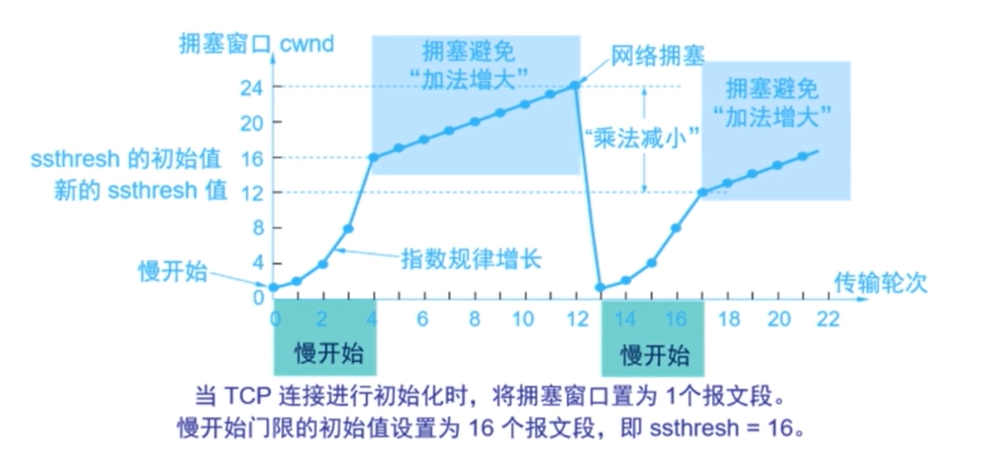
注意第二轮的阈值时上一轮拥塞时的一半
快重传和快恢复
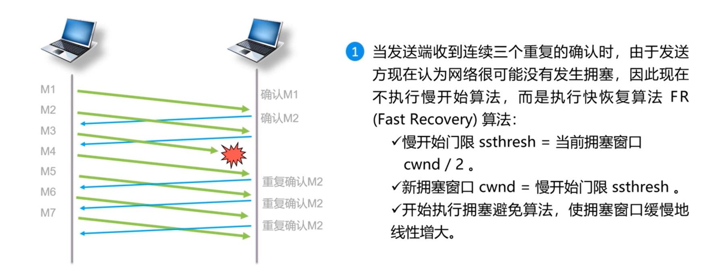
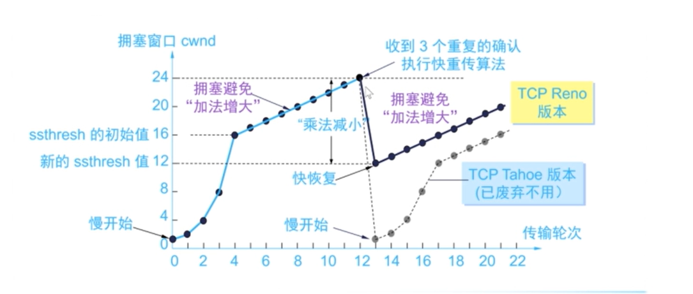
随机早期检测（网络层）
应用于路由器队列管理
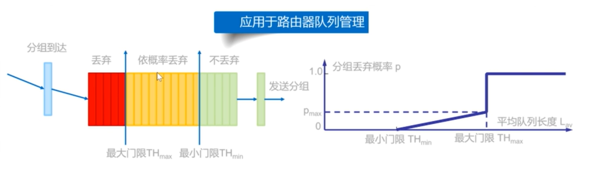
本博客所有文章除特别声明外，均采用 CC BY-NC-SA 4.0 许可协议。转载请注明来自 Pluto's blog！


![buuctf [2019红帽杯]easyRE](/2024/01/23/buuctf-2019%E7%BA%A2%E5%B8%BD%E6%9D%AF-easyRE/cover.jpg)